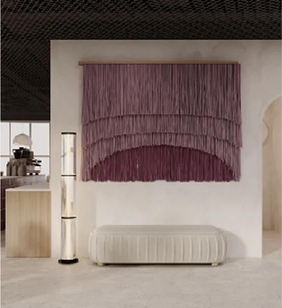
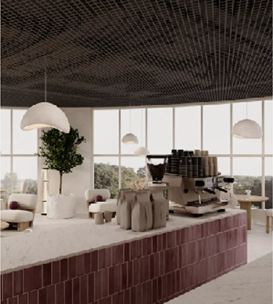
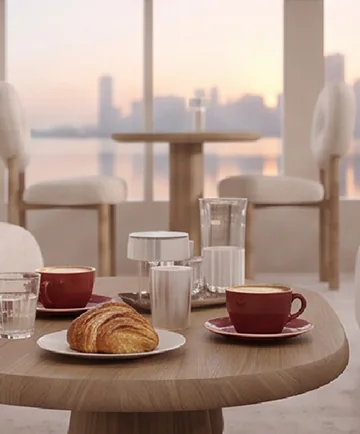
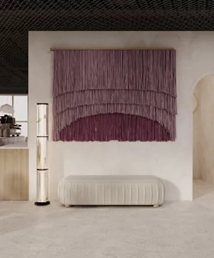
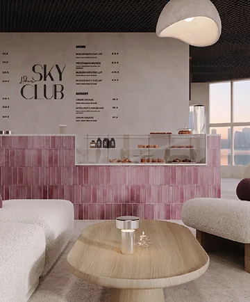
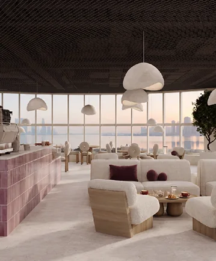
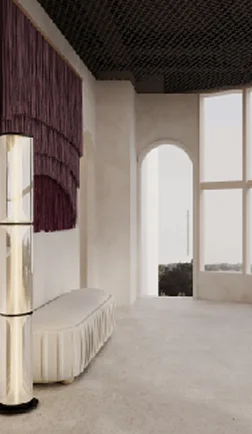

Discover Sky Café, a welcoming rooftop café in Sharjah where great food, refreshing drinks and beautiful elevated views come together. Located at Sky Ladies Club in Al Majaz 3, Sky Café offers members and guests a relaxing dining experience in a comfortable indoor setting overlooking the city.
Whether you're looking for freshly brewed coffee, a refreshing cold beverage, fresh juices or something delicious to eat, our café offers a selection to suit every moment of your visit. Enjoy a variety of snacks, light bites and satisfying meals, making it an ideal spot for a casual breakfast, a quick lunch, an afternoon coffee or a relaxing break throughout the day.
As part of Sky Ladies Club, a private ladies-only destination in Sharjah, Sky Café provides a welcoming space where women can unwind, catch up with friends and enjoy quality time in a comfortable environment. Whether you're visiting for a rooftop pool day, a Pilates session or simply looking for a relaxing café experience, Sky Café brings together good food, refreshing drinks and elevated views in one convenient location.






